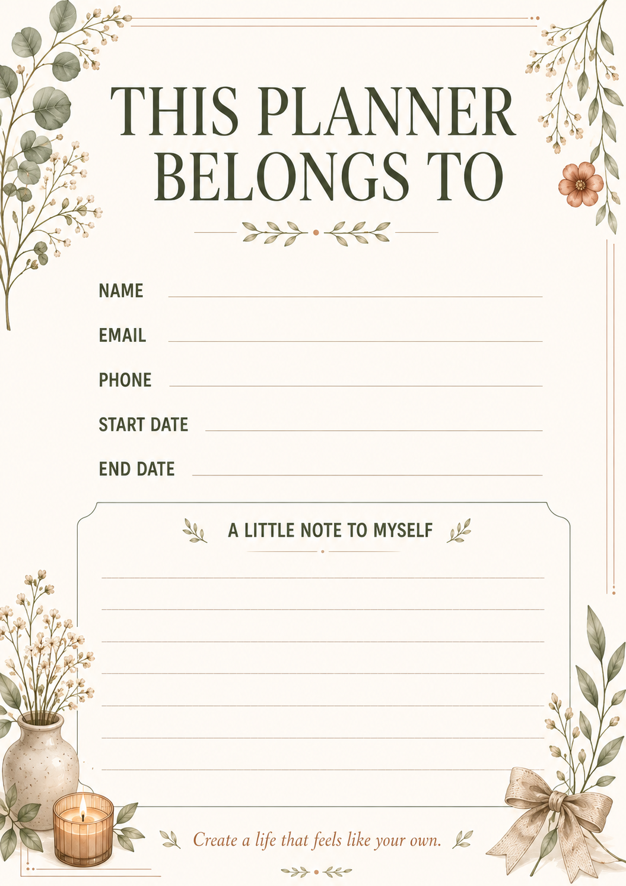

My Life Planner: Build a Daily Routine That Actually Sticks

Most routines don't fail because of laziness. They fail because they're built around a to-do list alone, with no room for the parts of life that keep you steady — sleep, meals, rest, the small rituals that make a day feel like yours. A life planner that only tracks tasks will always feel like pressure. One that makes space for both structure and self-care feels like support.
That's the idea behind My Life Planner: a daily routine planner built to hold your goals and your wellbeing in the same place, instead of treating them as separate things. It's designed for anyone who has felt the gap between "I have a plan" and "I actually feel okay today" — and wants a system that closes that gap instead of widening it.
Why Most Daily Routines Fall Apart
A routine usually breaks in the first two weeks for one of three reasons: it was copied from someone else's life instead of built for yours, it only accounts for "productive" hours and ignores rest, or there was never a simple way to track it day to day. A daily routine planner fixes the third problem directly, and gives you the structure to fix the first two yourself.
What's Inside My Life Planner
- Daily rhythm pages — morning, afternoon, and evening sections so your day has shape without feeling rigid.
- Weekly reset spreads — a calm place to look back at the week and reset intentions, not just tasks.
- Self-care and balance pages — space for mood, energy, and the small things that actually make you feel good.
- Goals and priorities — so the big picture and the daily grind stay connected instead of feeling like two different lives.
Who a Life Planner Actually Helps
A daily routine planner isn't only for people with packed schedules. It helps just as much when your days feel scattered — working from home, managing a household, or simply trying to find a rhythm after a season where nothing felt structured. The point isn't to fill every hour; it's to give your day a shape you can return to, even on the days that don't go as planned.
It also helps if you've tried habit trackers or productivity apps before and abandoned them within a week. A physical or PDF-based life planner tends to stick longer than an app, simply because opening it is a small ritual in itself rather than one more notification competing for attention.
Structure and Self-Care, Together
The biggest shift with a life planner isn't adding more pages — it's putting rest and reflection on the same page as your tasks, so neither one quietly disappears. When your evening routine and your to-do list live in the same planner, self-care stops being the thing you do "if there's time" and becomes part of the plan itself.
If your days are mostly shaped by classes and assignments rather than a full daily rhythm, our Best Digital Student Planner for 2026 guide covers a more academic-focused layout that might fit better.
A Simple Way to Start
Don't try to fill every page on day one. Start with just this:
- Fill in tomorrow's morning, afternoon, and evening rhythm tonight — three lines, nothing more.
- Each evening, jot one line under self-care: what helped you feel steady today.
Two weeks of that is usually enough for a routine to start feeling like habit instead of homework.
Frequently Asked Questions
What is a life planner used for?
A life planner is used to organize your daily routine, goals, and self-care in one place, rather than tracking tasks in one app and everything else in your head. It's meant to reflect your whole day, not just your to-do list.
How is My Life Planner different from a regular to-do list?
A to-do list only tracks tasks. My Life Planner adds daily rhythm pages, weekly resets, and self-care check-ins, so rest and reflection stay part of the plan instead of getting pushed aside.
Can a daily routine planner help with self-care?
Yes. When self-care has its own dedicated space next to your goals and tasks, it's far less likely to be skipped than when it's left as an afterthought you only get to "if there's time."
How long does it take for a new routine to feel natural?
Most people notice a routine starting to feel like habit rather than effort after about two consistent weeks — which is why starting small with just a few daily lines matters more than filling every page right away.
Is My Life Planner only for students?
No. It's built for anyone who wants more structure day to day — whether that's managing a household, working from home, or simply wanting a calmer daily rhythm.
Explore My Life Planner →